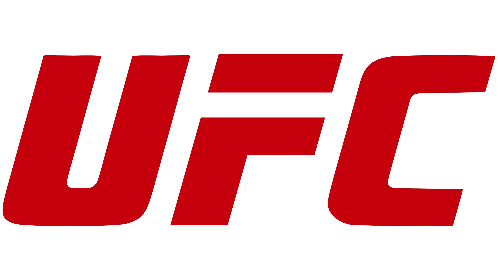
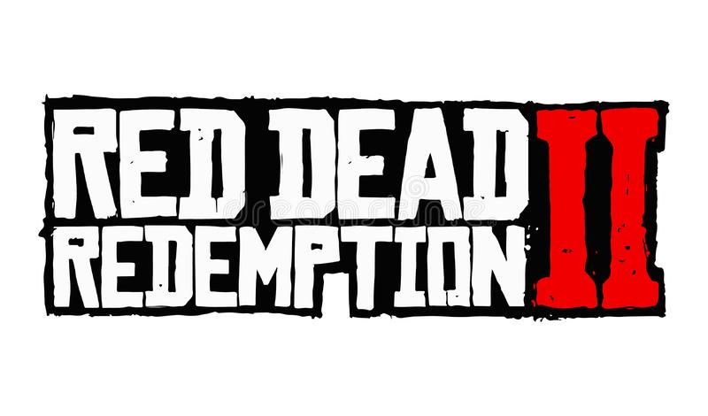
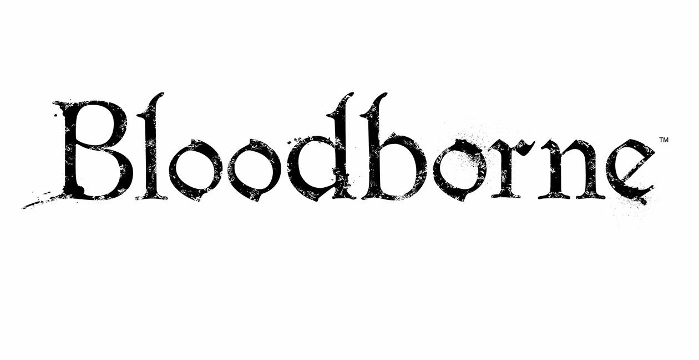

UfC
Az Ultimate Fighting Championship (UFC) egy amerikai vegyes harcművészetet (MMA) népszerűsítő cég, amelynek székhelye a nevadai Las Vegasban található. Tulajdonosa és üzemeltetője a Zuffa, LLC, az Endeavour Group Holdings 100%-os tulajdonában lévő leányvállalata. Ez a világ legnagyobb MMA-promóciós cége, és a sportág legmagasabb szintű harcosai is szerepelnek a listán. Világszerte szervez eseményeket, amelyek tizenkét súlycsoportot (nyolc férfi és négy női) mutatnak be, és betartják a vegyes harcművészetek egységes szabályait. 2020-ig több mint 500 rendezvényt tartott. Dana White 2001 óta az elnöke. White irányítása alatt világszerte népszerű, több milliárd dolláros vállalkozássá nőtte ki magát.
Red Dead Redemption 2
A Red Dead Redemption 2 egy 2018-as akció-kalandjáték, amelyet a Rockstar Games fejlesztett és adott ki. A játék a Red Dead sorozat második része, és a 2010-es Red Dead Redemption játék előzménye. A történet 1899-ben játszódik, és Arthur Morgan, a Van der Linde banda tagjának hőstetteit követi nyomon az Egyesült Államok nyugati, középnyugati és déli részének kitalált ábrázolásában. Arthurnak meg kell küzdenie a vadnyugat hanyatlásával, miközben megpróbál túlélni a kormányerők, rivális bandák és más ellenfelek ellen.
Bloodborne
A Bloodborne egy 2015-ös akció-szerepjáték, amelyet a FromSoftware fejlesztett ki, és a Sony Computer Entertainment adott ki PlayStation 4-re. A játékban, egy Vadász vagy akinek végig kell harcolnia magát a gótikus, viktoriánus korszak ihletésű Yharnam városán keresztül, amelynek lakóit vér útján terjedő betegséggel sújtották . A játékos megpróbálja megtalálni a pestis forrását, és megfejteni a város titkait, miközben fenevadakkal és kozmikus lényekkel küzd meg. 